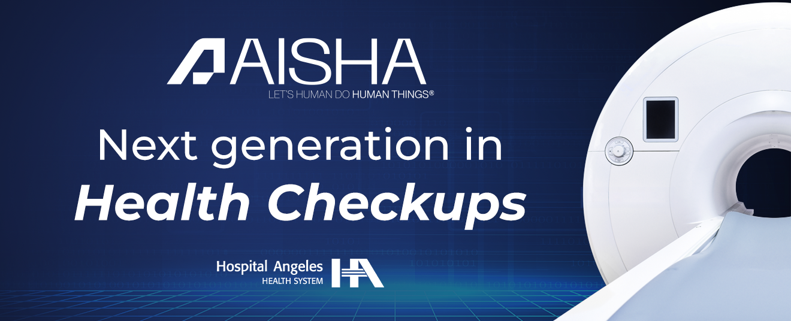

Resonancia AISHA
Resonancia magnética de cuerpo completo, sin radiación ionizante y orientada a una evaluación integral.
La resonancia magnética utiliza un campo magnético y ondas de radio para generar imágenes detalladas del interior del cuerpo. No utiliza radiación ionizante ni rayos X.
Características destacadas
- Evaluación de cabeza a pies.
- Imágenes de órganos, tejidos y otras estructuras.
- Sin radiación ionizante.
- Protocolo preventivo de aproximadamente una hora.
Importante: una resonancia preventiva no sustituye estudios específicos ni una valoración médica personalizada.